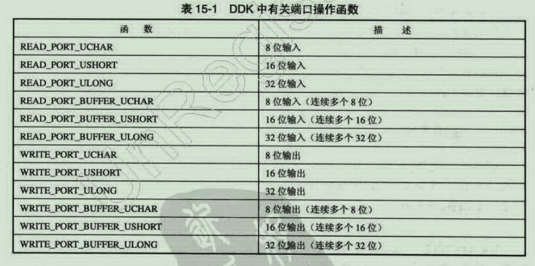
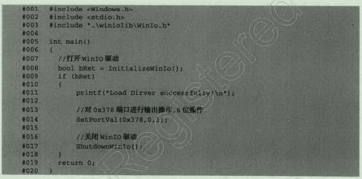
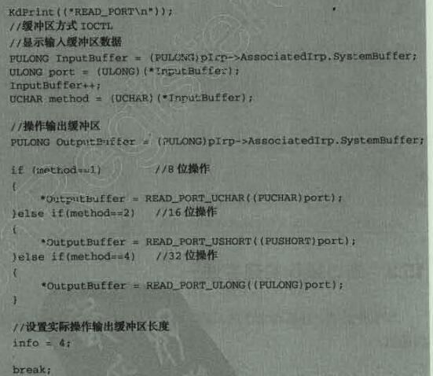

IO操作
在DOS的时候，确实可以直接使用IN和OUT这两个汇编指令的，但是到了现在只有在内核层才能直接使用汇编指令了。
8位的IO输出指令：
1 | UCHAR IN_8 (PUCHAR Port) |
很简单的操作，注意位数就好，并且用户层不能用。
DDK的IO函数

需要引入HAL.libUCHAR Ret8 = READ_PORT_UCHAR((PUCHAROx379)
WINIO的函数库，给的是用户层用，但是需要管理员权限，简单的使用：

DDK操作IO

就截图了关键代码段，首先我们获取输入输出的缓冲区，这块可能有点看不懂，但是解释一下就好，我们是规定了他的输入格式的，端口号是一个ULONG类型在最前面（这里需要注意的是InputBuffer++，我觉得是加一，端口号为啥要用四字节的，其实只是为了获取低位罢了，在下面的READ操作中，可以看到我们又强制转换成了其他的，但还是有ULONG类型的），然后就是输出的字节位数，供我们进行判断。
其实类似的写入的话呢基本相同，也就是在这个数据格式里面加了一个数据，其实我感觉引入一个结构体会更好一些，不知道作者这么写的目的是什么。
将用户模式下的函数提升到内核模式下
其实也是很简单的，比较直接的说就是将我们的用户层的函数地址传递给内核层的驱动，然后让驱动执行这个函数，我感觉很实用，想写个类似的工具！放在后面说。
其实还有一个方法在用户层读取IO的方法，就是使用为文档化的Ke386SetIoAccessMap函数，这个函数还需要我们进行声明，这个函数就是设置我们的EFLAGS寄存器的IOPL位，这里不做记录了，貌似现在用不了了。